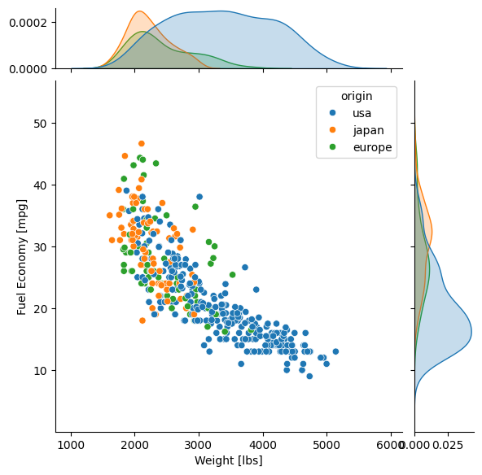
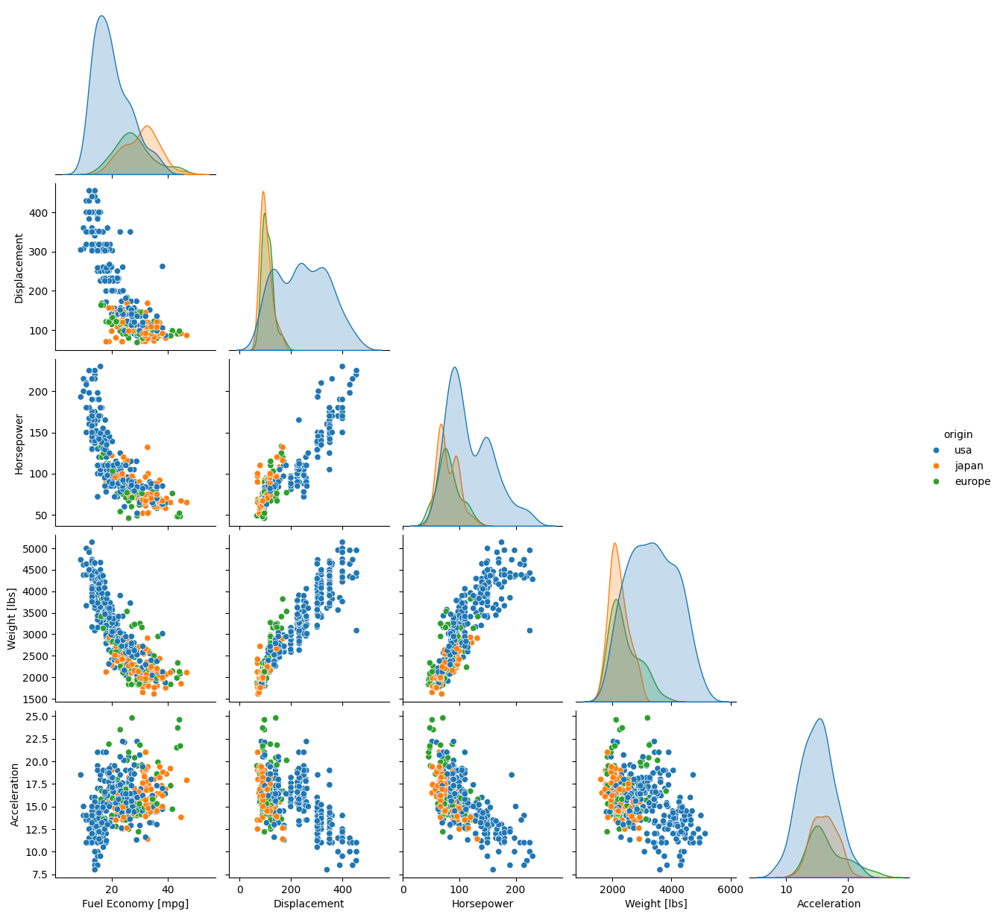
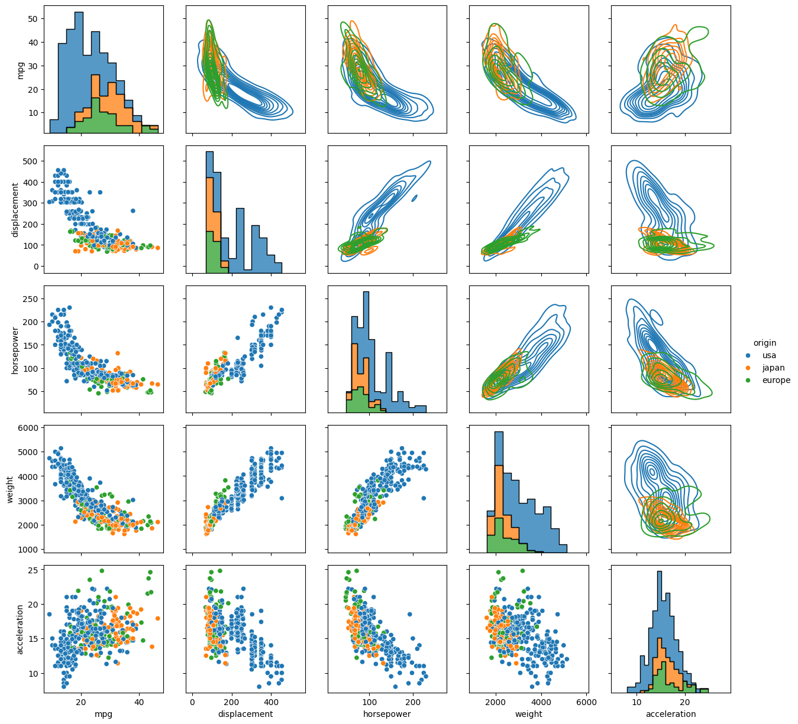
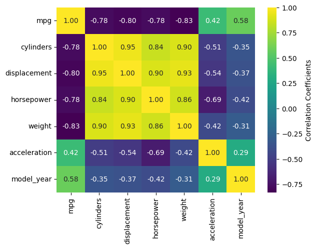
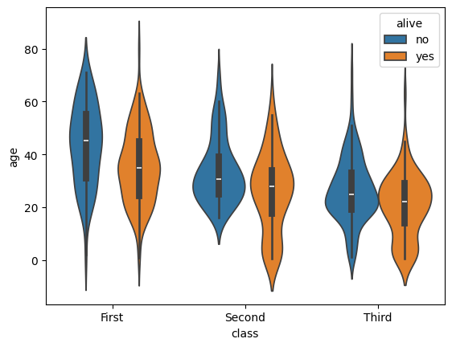
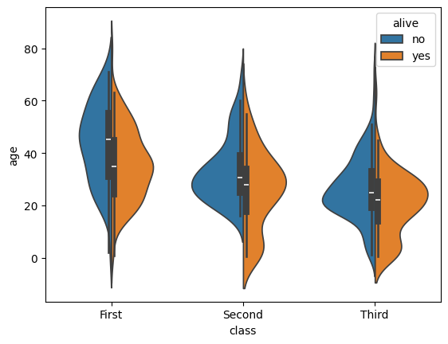
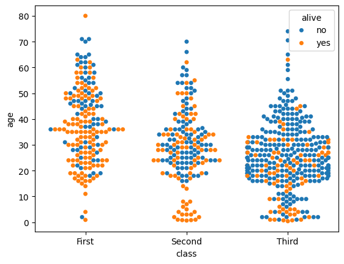

A Brief Introduction to the Seaborn Statistical Plotting Library
Seaborn is a plotting library built entirely with Matplotlib and designed to quickly and easily create presentation-ready statistical plots from Pandas data structures.
Seaborn can produce a wide variety of statistical plots, and even offers built-in regression functions, but in the interest of time, we will focus on just a few that are hard to replicate with Matplotlib alone. We will make extensive use of Seaborn’s built-in testing datasets, of which there are many. You will have seen a couple already in the Matplotlib and Pandas lectures.
Caution
Don’t Rely on Seaborn for Regression Analysis
We will not cover regression because Seaborn does not return any parameters needed to assess the quality of the fit. The official documentation itself warns that the Seaborn regression functions are only intended for quick and dirty visualizations to motivate proper in-depth analysis.
Load and Run Seaborn
Important
You should for this session load
ml GCC/12.3.0 Python/3.11.3 SciPy-bundle/2023.07 matplotlib/3.7.2 Tkinter/3.11.3 Seaborn/0.13.2As usual, you can check
ml spider Seabornto see the available versions and how to load them. These Seaborn modules are built to load their Matplotlib and SciPy-bundle dependencies internally.
If you work at the command line, after importing Matplotlib, you will need to set matplotlib.use('Tkinter') in order to view your plots. This is not necessary if you work in a GUI like Jupyter or Spyder.
As of 27-11-2024, ml spider Seaborn outputs the following versions on Kebnekaise:
----------------------------------------------------------------------------
Seaborn:
----------------------------------------------------------------------------
Description:
Seaborn is a Python visualization library based on matplotlib. It
provides a high-level interface for drawing attractive statistical
graphics.
Versions:
Seaborn/0.12.1
Seaborn/0.12.2
Seaborn/0.13.2
----------------------------------------------------------------------------
For detailed information about a specific "Seaborn" package (including how to load the modules) use the module's full name.
Note that names that have a trailing (E) are extensions provided by other modules.
For example:
$ module spider Seaborn/0.13.2
----------------------------------------------------------------------------
Important
You should for this session load
ml GCC/13.2.0 Python/3.11.5 SciPy-bundle/2023.11 matplotlib/3.8.2 Seaborn/0.13.2
On COSMOS, it is recommended that you use the On-Demand Spyder or Jupyter Lab applications to use Seaborn. These applications are configured to load Seaborn and all its dependencies autonatically, including the SciPy-bundle. The demonstrations will be done on Cosmos with Spyder.
If you must work on the command line, then you will need to load Seaborn separately, along with any prerequisite modules. After importing Matplotlib, you will need to set matplotlib.use('Tkinter') in order to view your plots.
As of 27-11-2024,
ml spider Seabornoutputs the following versions on COSMOS:---------------------------------------------------------------------------- Seaborn: ---------------------------------------------------------------------------- Description: Seaborn is a Python visualization library based on matplotlib. It provides a high-level interface for drawing attractive statistical graphics. Versions: Seaborn/0.11.2 Seaborn/0.12.1 Seaborn/0.12.2 Seaborn/0.13.2 ---------------------------------------------------------------------------- For detailed information about a specific "Seaborn" package (including how to load the modules) use the module's full name. Note that names that have a trailing (E) are extensions provided by other modu les. For example: $ module spider Seaborn/0.13.2 ----------------------------------------------------------------------------
Important
You should for this session load
module load python/3.11.8
On Rackham, Seaborn/0.13.2 is included in python_ML_packages/3.11.8-cpu. Jupyter-Lab is available but Spyder is not installed centrally.
Important
You should for this session load
module load buildtool-easybuild/4.8.0-hpce082752a2 GCC/13.2.0 Python/3.11.5 SciPy-bundle/2023.11 JupyterLab/4.2.0
And install
seabornto~/.local/if you don’t already have it
pip install seaborn
In all cases, once Seaborn or the module that provides it is loaded, it can be imported directly in Python. The typical abbreviation in online documentation is sns, but for those of us who never watched The West Wing, sb is fine and is what will be used in this tutorial.
Common Features
Sample Datasets
This tutorial will make use of some of the free test data sets that Seaborn provides with the .load_dataset() function. These are also handy for playing with Pandas and a variety of machine learning packages (TensorFlow, PyTorch, etc.). The full list of datasets can be viewed with sb.get_dataset_names(), and for more details, you can visit the GitHub repository and follow the links in the ReadMe under “Data Sources”. A few of the more popular data sets include…
'penguins', sex-segregated measurements of the beaks, flippers, and body masses of 3 species of penguins that live on the Antarctic Peninsula.'iris', measurements of the petal and sepal dimensions of three species of iris flower.'titanic', records of the ticket class, demographics, and survival status of passengers on the Titanic'mpg', information about the model, year, physical characteristics, engine specifications, and fuel economy of a variety of cars.'planets', a much older, smaller sample of the exoplanets data we used in the Matplotlib seminar, with fewer physical and orbital parameters. Hopefully it will be updated soon.
For most of this tutorial, we will use the 'mpg' dataset. For a more categorical dataset, we will use the 'titanic' set.
Commonalities in Plotting
Seaborn plotting functions are designed to take Pandas DataFrames (or sometimes Series) as inputs. As such, different plot types share many of the same kwargs (there are no args). The following are the most important:
data—the DataFrame in which to search for the remaining kwargs. You can pass it as either the first positional arg or as a kwarg, but it’s mandatory either way.xandy—the names of two columns in your DataFrame to plot against each other. These are usually necessary, but not if you’re plotting every possible pairing of numerical data columns against each other all at once, as inpairplotorheatmap.hue—this kwarg accepts a categorical variable (e.g. species, sex, brand, etc.) column name, groups the data by those categories, and plots them all on the same plot in a different color.The default colors are usually fine if you have <5 categories, but if you want to change them, you can set your code under with sb.color_palette(“<palette>”) where <palette> can be any of the options described in the official documentation. You can also set your own palette for the whole session with
sb.set_palette(your_color_list).
ax—this kwarg takes the name of an axis object if you want to add your Seaborn plot(s) as subplots on an existing figure.
Note
Figure vs. Axis-level interfaces. Whether you import matplotlib.pyplot and instantiate the usual fig, ax or not, Seaborn plotting commands look almost identical apart from the ax kwarg, which you only need to add Seaborn subplots to other figures. If you use Seaborn plots with ax, they are essentially drop-in replacements for other Matplotlib axes methods, but you lose some of the nicer automatic formatting features, like exterior legends. Without the ax kwarg, a Seaborn plot will occupy a whole figure, which can make it trickier to format axes labels properly. A fuller explanation of the pros and cons of each approach is provided in the official documentation..
Caution
Seaborn typically titles axes by the variable names as they appear in the DataFrame, underscores and all. It’s easy enough to override the labels for a simple pairwise plot, but correcting the typesetting can get tedious and tricky when there are many subplots. Since proper typesetting is necessary for figures to be published, an upcoming example will demonstrate one possible way to fix the axis label formatting.
Another common feature of Seaborn is that many of the high-level functions that you would ordinarily use are actually wrappers for more flexible base classes with methods that let you layer different plot types on top of each other. We’ll only cover one case here, but keep it in mind when you
Plotting with Seaborn
Here we will explore a few of the plot types Seaborn offers that are difficult to replicate in Matplotlib:
sb.jointplot()sb.pairplot()and the underlyingsb.PairGrid()functionsb.heatmap()andsb.clustermap()sb.violinplot()(yes, there is a Matplotlib violin plot method, but the Seaborn version produces much nicer figures with much less work) and related plots
Joint Plots
A joint plot is a plot of 2 variables against each other with small histograms of each variable along the top and right sides of the plot. If you participated in the Matplotlib tutorial, you saw how tedious this is to make in pure Matplotlib. But what takes at least a dozen lines of code in pure Matplotlib can be done in 1 line with Seaborn.
To demonstrate with the 'mpg' dataset, let’s plot the fuel economy in mpg against vehicle weight. As a bonus, let’s color the data by region of origin.
import seaborn as sb
mpg = sb.load_dataset('mpg')
jp = sb.jointplot(data=mpg, x='weight', y='mpg', hue='origin', marginal_ticks=True)
#fix the labels to make them presentable
from matplotlib import pyplot as plt
plt.xlabel('Weight [lbs]')
plt.ylabel('Fuel Economy [mpg]')
Text(37.722222222222214, 0.5, 'Fuel Economy [mpg]')

The only kwarg shown that we didn’t cover already is marginal_tick, which shows the y-axis ticks for the marginal probability distributions (the smoothed histograms along the sides). Normally they are off (False) to avoid overlap with the main axis ticks.
By default the main plot is a scatter plot, and the marginal plots are either histograms if the data are not shaded by a categorical variable, or kernel density estimations (KDEs, which are basically histograms smoothed by convolution with a usually Gaussian kernel) if the hue kwarg is used. The type of central plot can be changed with the kind kwarg, which also accepts
'scatter','hist','hex'(for hexbin),'kde'(which plots contours of the smoothed bivariate distribution),'reg'(which does linear regression internally and plots the trendline over a scatter plot), and'resid'(which does linear regression internally and makes a scatter plot of the data minus the trend).
The options that involve linear regression cannot be used with hue, and many of the other options change the appearance of the marginal distributions.
That’s all well and good, but what if you have a lot of variables that you need to do this kind of analysis with?
Pairplot and PairGrid
When confronted with a multivariate dataset, you often need to plot many numeric variables against each other in every unique combination, and also look at the probability distributions of each individual variable. With only a handful of variables, this is typically done on a Corner Plot, a set of plots with histograms on the diagonal and bivariate distributions on the lower off-diagonal. Seaborn makes this kind of plot easy to make and customize, and you don’t even need to tell it to ignore non-numeric columns—it automatically ignores any categorical column not specified with hue.
For a typical dataset and typical display settings, it is enough to use Seaborn’s pairplot() function, a wrapper around the underlying, more customizable PairGrid(). We’ll again use the the 'mpg' data set to demonstrate.
First, let’s see how many variables there are and whether any of them take a small number of discrete values. If there are more than about 5-6 numeric variables, a pairplot featuring all of them can become hard to read if constrained to the size of a journal page, so it’s better to plot only as many as necessary.
import seaborn as sb
mpg = sb.load_dataset('mpg')
print(mpg.info())
print(mpg.nunique())
<class 'pandas.core.frame.DataFrame'>
RangeIndex: 398 entries, 0 to 397
Data columns (total 9 columns):
# Column Non-Null Count Dtype
--- ------ -------------- -----
0 mpg 398 non-null float64
1 cylinders 398 non-null int64
2 displacement 398 non-null float64
3 horsepower 392 non-null float64
4 weight 398 non-null int64
5 acceleration 398 non-null float64
6 model_year 398 non-null int64
7 origin 398 non-null object
8 name 398 non-null object
dtypes: float64(4), int64(3), object(2)
memory usage: 28.1+ KB
None
mpg 129
cylinders 5
displacement 82
horsepower 93
weight 351
acceleration 95
model_year 13
origin 3
name 305
dtype: int64
Let’s drop ‘cylinders’, ‘model_year’, and ‘name’, and keep ‘origin’ for the hue. While we’re at it, let’s see what it would take just to give the axis labels proper capitalization and units.
import seaborn as sb
mpg = sb.load_dataset('mpg')
temp = mpg.drop(['model_year','cylinders', 'name'], axis='columns')
g = sb.pairplot(data=temp, diag_kind='kde', corner=True, hue='origin')
import string
for i in range(5):
for j in range(5):
try:
xlabel = g.axes[i,j].xaxis.get_label_text()
ylabel = g.axes[i,j].yaxis.get_label_text()
if xlabel == 'mpg':
g.axes[i,j].set_xlabel('Fuel Economy [mpg]')
elif xlabel=='weight':
g.axes[i,j].set_xlabel('Weight [lbs]')
else:
g.axes[i,j].set_xlabel(string.capwords(xlabel))
if ylabel == 'mpg':
g.axes[i,j].set_ylabel('Fuel Economy [mpg]')
elif ylabel=='weight':
g.axes[i,j].set_ylabel('Weight [lbs]')
else:
g.axes[i,j].set_ylabel(string.capwords(ylabel))
except AttributeError:
pass

As you can see, most of the code was spent fixing the labels. The actual plot was a breeze.
The kwargs shown that we haven’t seen before are diag_kind and corner. Technically diag_kind='kde' wasn’t necessary because, as with jointplot(), setting the hue kwarg automatically tells Seaborn to smooth the marginal distributions along the diagonal so they can be plotted with a lines instead of bars, which makes it easier to see multiple data sets layered on top of each other. Without hue, however, the default is diag_kind='hist', which doesn’t look nearly as nice. The other kwarg corner is a boolean switch that, when True, tells Seaborn not to mirror the bivariate distributions below the diagonal to the space above the diagonal. The default is corner=False, which is usually not what you want.
That said, sometimes it’s nice to mirror the bivariate data above the diagonal but display it in a different form. That’s not doable with just sb.pairplot(), but it is with the underlying sb.PairGrid() function, which has many more methods and some different kwargs. The way we change the format of different parts of the grid is to use the .map_<position>(sb.<plotkind>) series of methods of PairGrid objects:
.map_diag()which handles data on the diagonal,.map_upper()which handles data above the diagonal, and.map_lower()which handles data below the diagonal.
Each of these takes Seaborn’s version of a standard pairwise plot type and casts the variables to their respective subplots in the form of that plot. Some of the plot options include scatterplot, histplot, kdeplot, and ecdfplot.
Legends also have to be added manually, but that’s a small price to pay for the extra flexibility. Let’s redo the previous pairplot, but this time plot the lower off-diagonal plots as scatter plots, the upper off-diagonals as KDEs (which render as contours in 2D), and the diagonals as stacked histograms just to show off. (We’ll skip the axis typesetting this time.)
import seaborn as sb
mpg = sb.load_dataset('mpg')
temp = mpg.drop(['model_year','cylinders', 'name'], axis='columns')
g = sb.PairGrid(data=temp, despine=False, hue='origin', diag_sharey=False)
g.map_diag(sb.histplot, multiple="stack", element="step")
g.map_upper(sb.kdeplot)
g.map_lower(sb.scatterplot)
g.add_legend()
plt.show()

PairGrid() does accept the corner and hue kwargs, but not diag_kind, for reasons that are hopefully obvious. That despine and diag_sharey kwargs are unique to PairGrid(). When despine=False (default is True for aesthetic reasons), the entire bounding box of each set of axes is drawn, instead of just the bottom and left edges. When diag_sharey=False (default is True), Seaborn does not attempt to match the scale of the marginal distributions on the diagonal to the y-axes of the off diagonals, which allows the plots on the diagonals to fill their space instead of potentially getting squished.
For the map_ commands, the kwargs depend on the type of plot that was passed. Where histplot was passed, the multiple and element kwargs offer nice ways to adjust the appearance of the histograms so that they would display well as layers. Setting multiple="stack" insured that the smallest histograms were drawn in front of the largest, and setting element="step" erased the sides of the histogram bins where they touched adjacent bins, which made the layered plot less cluttered. kdeplot and scatterplot have their own kwargs to control things like linestyles and markers.
Note
Unlike most other plots demonstrated here, pairplot() and PairGrid() do not have an ax kwarg because they are already plotting multiple subplots. They will and must occupy an entire figure.
Heatmap and Clustermap
Sometimes you have too many variables to look at with pairplots or corner plots, and the best you can do is map the correlation coeffcients between different parameters. Alternatively, you might have a DataFrame with a comparable number of numeric rows and columns, and you want to see how the rows and columns correlate. Either way, the DataFrame must be able to be coerced to ndarray.
Once again, this type of plot is extremely tedious to make in pure Matplotlib, but in Seaborn, it can require as little as one line of code. There are two functions that do this: sb.heatmap() and sb.clustermap(). The main difference between the two is that the latter attempts to rearrange variables such that those that are correlated are positioned next to each other on the plot, while the former simply lists the variables in the order they were given in the DataFrame.
The mpg DataFrame can’t be used directly, but the correlation matrix of it can be. Fortunately, .corr() is a DataFrame method. Let’s see what heatmap() and clustermap() look like for the numeric columns of mpg.
import seaborn as sb
mpg = sb.load_dataset('mpg')
sb.heatmap(mpg.corr(numeric_only=True), annot=True, fmt=".2f", cmap='viridis', cbar_kws={'label':'Correlation Coefficients'})
<Axes: >

import seaborn as sb
mpg = sb.load_dataset('mpg')
sb.heatmap(mpg.corr(numeric_only=True), annot=True, fmt=".2f", cmap='viridis', cbar_kws={'label':'Correlation Coefficients'})
<Axes: >

The most handy kwargs for these two functions is annot, which prints the values of the squares is True or accepts an alternative annotation array, and cbar_kws, which accepts formatting kwargs for Matplotlib’s fig.colorbar() as a dictionary. Also shown are fmt, which tells annot how to render the numbers and uses the same form as the expressions in the curly braces of {:}.format() after the colon, and cmap, used here to choose a standard Matplotlib colormap instead of Seaborn’s default. There are also vmin and vmax kwargs to adjust the limits of the colormap, and a mask kwarg to mask specific squares, among many other kwargs.
Note
There is a bug in Seaborn/0.12.2 that causes heatmap() and clustermap() with annot=True to only label the top row. This is fixed in later versions.
Violin Plots and the Like
Seaborn offers several plots in the boxplot/violinplot mold. sb.swarmplot() (essentially a scatter plot shaped like a violin plot) and sb.boxenplot() (like a hybrid of box plot and histogram) have no Matplotlib counterpart. Even those with Matplotlib analogs are much easier to make and come out with a much more viewer-friendly appearance. Partly this is because Seaborn makes it so much easier to color different datasets, which in Matplotlib involves painstakingly drawing and filling in separate patches for each dataset.
In matplotlib, the default violin plot only shows the median, limits, and the kde of the distributions, all in a uniform color. Seaborn also over-plots a thin box-and-whisker plot (without the fliers) to show the quartiles, it shades different datasets by hue automatically, and it offers a split feature that allows you to show a second categorical variable on the same plot as long as it only takes 2 values. Let’s have a look using the 'titanic' dataset.
import seaborn as sb
tdf = sb.load_dataset('titanic')
sb.violinplot(data=tdf, x="class", y="age", hue="alive")
<Axes: xlabel='class', ylabel='age'>

And now let’s see the same plot with split=True.
import seaborn as sb
tdf = sb.load_dataset('titanic')
sb.violinplot(data=tdf, x="class", y="age", hue="alive", split=True)
<Axes: xlabel='class', ylabel='age'>

There are dozens of other kwargs to control the appearance of different elements of the plot, but exploring them is left as an exercise to the reader. Instead, let’s look at a plot that has a similar shape but shows individual data points: sb.swarmplot(). This plot type is useful for smaller datasets where you are suspicious that a KDE or boxplot might smooth out important small-scale structures.
import seaborn as sb
tdf = sb.load_dataset('titanic')
sb.swarmplot(data=tdf, x="class", y="age", hue="alive")
<Axes: xlabel='class', ylabel='age'>

This shows that the sb.violinplot() version concealed significant differences in the absolute survival rates in each passenger class. Seaborn/0.13.0 and later offer a couple of different kwargs to control the normalization so that you don’t have to sacrifice this detail in your violin plots anymore, but these are not available for all students at all HPC centers this year. sb.swarmplot() may not look as clean, but it may be a more accurate alternative for the time being.
Key Points
Seaborn makes statistical plots easy and good-looking!
Seaborn plotting functions take in a Pandas DataFrame, sometimes the names of variables in the DataFrame to extract as
xandy, and often ahuethat makes different subsets of the data appear in different colors depending on the value of the given categorical variable.Seaborn also offers datasets to play with.
Typesetting axes labels can be an issue, though.